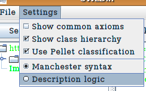

Features
OWLDiff is a project aiming to substitute classical diff used in version control systems, when such system is used for keeping ontologies. Naturally OWLDiff can be used as stand-alone application, too.
File format:
- owl - ontology in language OWL 1.1 stored as XML
Manchester syntax:
- Axioms are shown in Manchester syntax, which is easier to read
- Mathematical symbols such as ∃, ∀, ¬ and have been replaced by keywords such as “some”, “only”, and “not”
- There is choice to select between Description Logic and Manchester syntax

Hierarchy view:
Supported platforms:
- Windows (XP, Vista)
- Linux (i386, x86_64)
- Other platforms with Java support